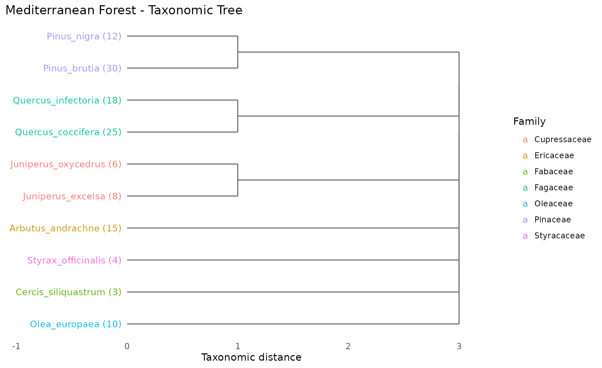
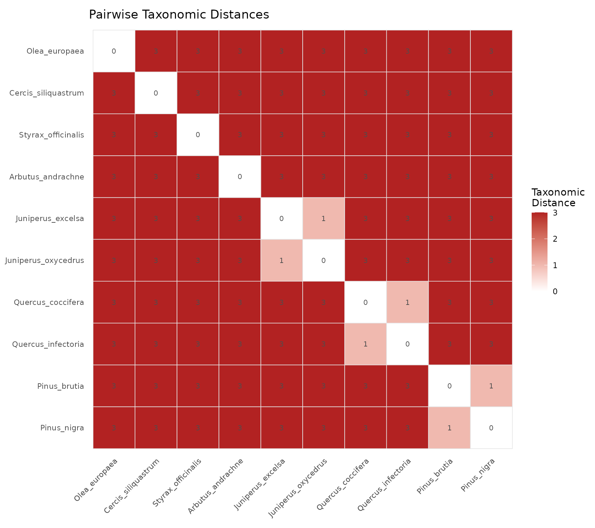
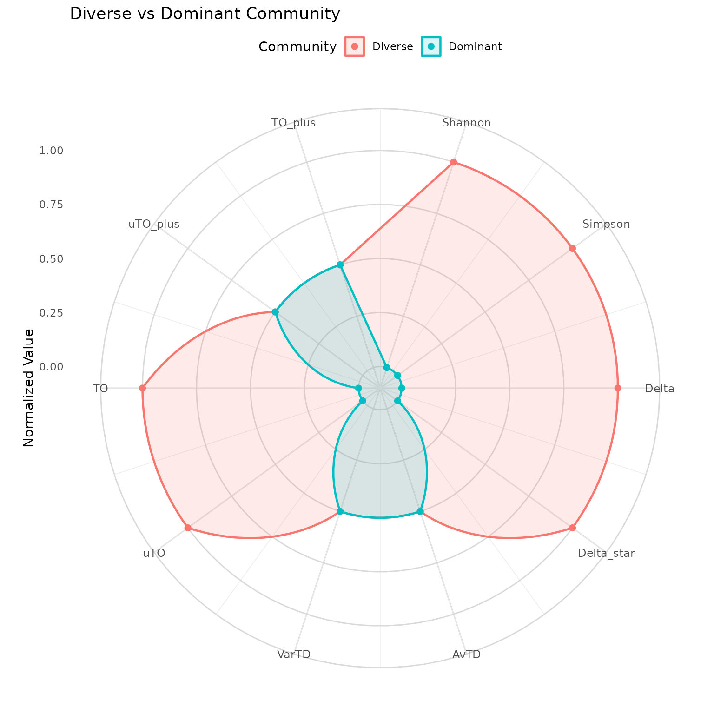
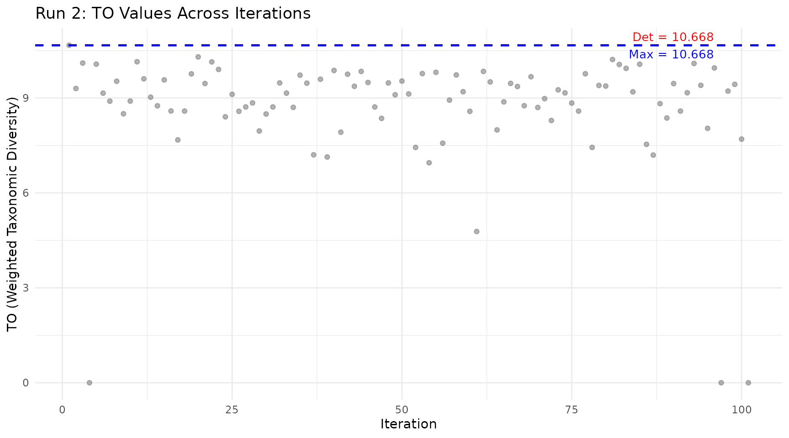
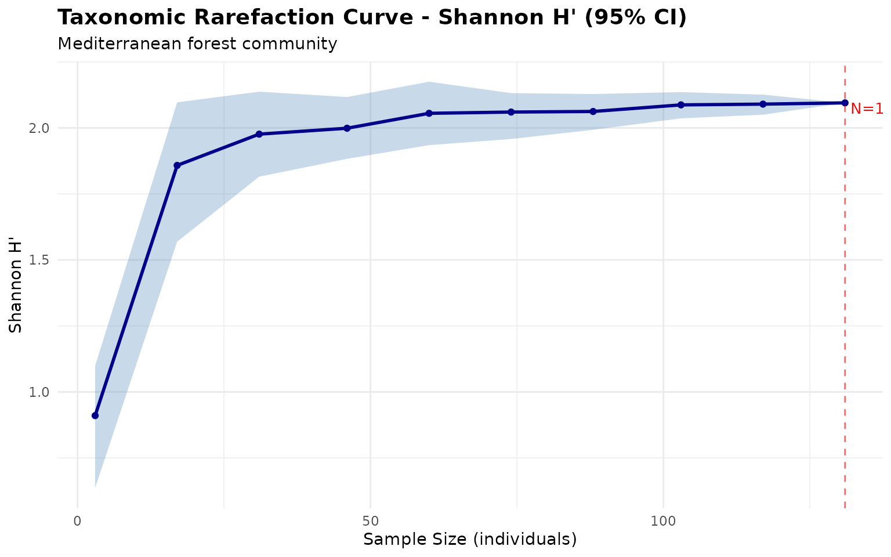

Overview
taxdiv provides 7 plot types built on ggplot2, each designed to answer a specific analytical question. All plot functions return ggplot objects that can be further customized.
library(taxdiv)
# Mediterranean forest community
community <- c(
Quercus_coccifera = 25,
Quercus_infectoria = 18,
Pinus_brutia = 30,
Pinus_nigra = 12,
Juniperus_excelsa = 8,
Juniperus_oxycedrus = 6,
Arbutus_andrachne = 15,
Styrax_officinalis = 4,
Cercis_siliquastrum = 3,
Olea_europaea = 10
)
tax_tree <- build_tax_tree(
species = names(community),
Genus = c("Quercus", "Quercus", "Pinus", "Pinus",
"Juniperus", "Juniperus", "Arbutus", "Styrax",
"Cercis", "Olea"),
Family = c("Fagaceae", "Fagaceae", "Pinaceae", "Pinaceae",
"Cupressaceae", "Cupressaceae", "Ericaceae", "Styracaceae",
"Fabaceae", "Oleaceae"),
Order = c("Fagales", "Fagales", "Pinales", "Pinales",
"Pinales", "Pinales", "Ericales", "Ericales",
"Fabales", "Lamiales")
)Quick Reference
| Plot | Function | Question it answers |
|---|---|---|
| Taxonomic Tree | plot_taxonomic_tree() |
How are species related? |
| Heatmap | plot_heatmap() |
Which species pairs are closest/farthest? |
| Bubble Chart | plot_bubble() |
Which species contribute most to diversity? |
| Radar Chart | plot_radar() |
How do communities compare across all indices? |
| Iteration Plot | plot_iteration() |
How stable is pTO across resampling? |
| Rarefaction Curve | plot_rarefaction() |
Is my sampling effort sufficient? |
| Funnel Plot | plot_funnel() |
Is my community’s AvTD/VarTD significant? |
1. Taxonomic Tree (Dendrogram)
Question: How are the species in my community taxonomically related?
Shows the hierarchical classification as a dendrogram. Species on the same branch share closer taxonomic classification.
plot_taxonomic_tree(tax_tree, community = community,
color_by = "Family", label_size = 3.5,
title = "Mediterranean Forest - Taxonomic Tree")
How to read:
- Species emerging from the same branch share a taxonomic group
- Numbers in parentheses show abundance
- Colors indicate family membership
- Longer branches = greater taxonomic distance
When to use: At the start of any analysis, to understand the taxonomic structure of your community before computing indices.
2. Taxonomic Distance Heatmap
Question: How distant is each species pair in the taxonomic hierarchy?
Displays the full pairwise taxonomic distance matrix as a color grid.
plot_heatmap(tax_tree, label_size = 2.8,
title = "Pairwise Taxonomic Distances")
How to read:
- Dark red cells = distant species pairs (different orders)
- Light/white cells = closely related species (same genus or family)
- Diagonal is always zero (species compared to itself)
- Symmetric matrix (distance from A to B = distance from B to A)
When to use: To identify clusters of closely related species and to understand which species pairs drive the AvTD and Delta values.
3. Bubble Chart
Question: Which species contribute most to taxonomic diversity?
Each bubble represents a species, positioned by abundance (x-axis) and average taxonomic distance to all other species (y-axis). Bubble size reflects the combined contribution.
plot_bubble(community, tax_tree, color_by = "Family",
title = "Species Contributions to Diversity")
How to read:
- Upper right: High abundance + taxonomically distinct = major contributor to diversity
- Upper left: Rare but taxonomically unique = important for taxonomic breadth despite low numbers
- Lower right: Abundant but taxonomically common = contributes to evenness but not taxonomic distinctness
- Lower left: Rare and taxonomically common = minimal contribution
When to use: To identify keystone species for conservation priority — species in the upper portion of the chart contribute most to taxonomic diversity and their loss would have the greatest impact.
4. Radar Chart (Spider Plot)
Question: How do two or more communities compare across all indices?
Overlays multiple communities on a single polar coordinate plot where each axis represents a different diversity index.
# Degraded community for comparison
dominant_community <- c(
Quercus_coccifera = 80, Quercus_infectoria = 5,
Pinus_brutia = 3, Pinus_nigra = 2,
Juniperus_excelsa = 2, Juniperus_oxycedrus = 1,
Arbutus_andrachne = 3, Styrax_officinalis = 1,
Cercis_siliquastrum = 2, Olea_europaea = 1
)
communities <- list(
Diverse = community,
Dominant = dominant_community
)
plot_radar(communities, tax_tree,
title = "Diverse vs Dominant Community")
#> Warning: Removed 2 rows containing missing values or values outside the scale range
#> (`geom_point()`).
How to read:
- Each axis is one diversity index (normalized to 0–1)
- Larger polygon area = higher overall diversity
- Overlapping axes = communities score similarly on that index
- Divergent axes = communities differ on that dimension
Key insight: If polygons overlap on AvTD/VarTD but diverge on Shannon/Simpson, the communities have the same species list but different abundance distributions. If they diverge on everything, the species composition itself is different.
When to use: For publication-ready multi-community comparisons. The radar chart reveals which dimensions of diversity differ, not just whether communities are “more” or “less” diverse overall.
5. Iteration Plot (Run 2)
Question: How stable are pTO values across stochastic resampling?
Shows the pTO value at each iteration of Run 2, where different species subsets are randomly included or excluded.
run2 <- ozkan_pto_resample(community, tax_tree, n_iter = 101, seed = 42)
plot_iteration(run2, component = "TO",
title = "Run 2: TO Values Across Iterations")
How to read:
- Grey dots: pTO value for each random species subset
- Red line: Deterministic value (Run 1, all species included)
- Blue line: Maximum value found across all iterations
Key insight: Points above the red line indicate subcommunities that are more diverse than the full community. This happens when removing taxonomically redundant species improves the ratio of between-group to within-group diversity.
When to use: After running the Ozkan pipeline, to understand the distribution of possible diversity values and whether the maximum is an outlier or representative of many subsets.
6. Rarefaction Curve
Question: Is my sampling effort sufficient to capture the community’s diversity?
Shows how the diversity estimate changes as you increase the number of individuals sampled, with bootstrap confidence intervals.
rare <- rarefaction_taxonomic(community, tax_tree,
index = "shannon",
steps = 10, n_boot = 50, seed = 42)
plot_rarefaction(rare)
How to read:
- X-axis: Number of individuals sampled
- Y-axis: Estimated diversity index
- Shaded band: 95% bootstrap confidence interval
- Plateau: Curve levels off = sampling is sufficient
- Steep at right edge: More sampling needed
When to use: Before any analysis, to check whether your sampling effort is adequate. If the curve has not plateaued, additional sampling would likely reveal new species and change your diversity estimates.
7. Funnel Plot
Question: Is my community’s AvTD/VarTD significantly different from random expectation?
Plots observed values against simulated 95% confidence intervals from random subsamples of a master species pool.
data(anatolian_trees)
sim <- simulate_td(
tax_tree = anatolian_trees,
s_range = c(3, 15),
n_sim = 99,
index = "avtd",
seed = 42
)
spp <- names(community)
obs_avtd <- avtd(spp, tax_tree)
plot_funnel(sim,
observed = data.frame(
site = "Mediterranean",
s = length(spp),
value = obs_avtd
),
index = "avtd",
title = "AvTD Significance Test")
How to read:
- Blue line: Mean expected value for each species richness level
- Grey band: 95% confidence interval from simulations
- Red point: Your observed community
Inside the funnel = not significantly different from random expectation. Below the funnel = taxonomically impoverished (fewer higher-level groups than expected). Above the funnel = taxonomically enriched (unusually high distinctness).
When to use: Whenever you need to assess whether a community’s taxonomic structure is statistically unusual. This is the only test in taxdiv that provides formal significance assessment.
Customizing Plots
All plot functions return ggplot objects. You can customize them with standard ggplot2 functions:
library(ggplot2)
plot_rarefaction(rare) +
theme_minimal() +
labs(subtitle = "Mediterranean forest community") +
theme(plot.title = element_text(face = "bold", size = 14))
Common customizations:
# Change theme
p + theme_classic()
# Modify colors
p + scale_color_brewer(palette = "Set2")
# Adjust text size
p + theme(axis.text = element_text(size = 12))
# Save to file
ggsave("my_plot.png", p, width = 10, height = 6, dpi = 300)